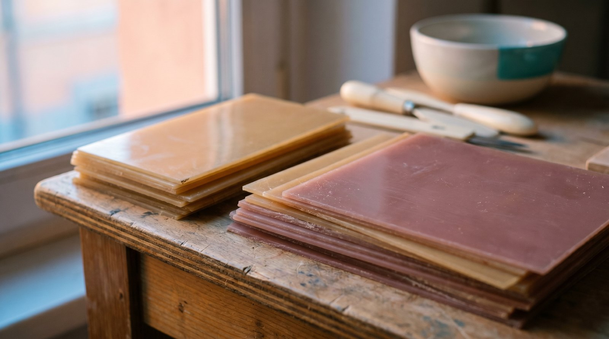

Acétate, titane : ce qui compte vraiment
Une monture honnête, ce n'est pas une liste de mots savants. C'est une bonne matière, bien choisie, et des verres qui font ce qu'ils promettent. Le reste — les « traitements » miracles, les options à rallonge — c'est l'équivalent optique du 5 % d'acide hyaluronique qui ne sert à rien.

Quand on choisit une monture, on regarde la forme, la couleur, peut-être la marque. On regarde rarement la matière — et c'est dommage, parce que c'est elle qui décide si la paire vous accompagnera dix ans ou finira tordue dans un tiroir après un été. Chez LUCIDE, on a une règle simple, presque diététique : on ne met dans une monture que des ingrédients qui servent vraiment. Comme on choisirait de manger des brocolis plutôt que des chips. C'est moins spectaculaire. Ça tient au corps.
L'acétate italien : la matière qui vieillit bien
L'acétate, c'est une matière dérivée de la cellulose — du coton et du bois, pour le dire vite. Le bon acétate, on le reconnaît à sa profondeur : la couleur n'est pas posée en surface, elle traverse la masse. On taille la façade dans un bloc, on la polit, on la cintre à la main. C'est plus long, plus cher, et infiniment plus beau que l'injection plastique des montures jetables.
On travaille un acétate italien en bloc, choisi pour sa tenue dans le temps : il se réajuste à chaud chez l'opticien, il se repolit, il pardonne les années. À l'opposé, beaucoup de montures « pas chères » sont en plastique injecté qui blanchit, se déforme et casse net : increvable jusqu'au jour où c'est irréparable.
Le titane recyclé : léger, solide, honnête
Pour nos montures fines et métalliques, on a choisi le titane, et autant que possible du titane recyclé. Pourquoi ? Parce qu'il coche les cases réelles, pas les cases marketing : il est extrêmement léger (on oublie qu'on le porte), il ne rouille pas, il résiste à la déformation, et il est hypoallergénique — précieux pour les peaux sensibles, là où certains alliages bon marché laissent des marques vertes.
On choisit du recyclé non pas pour pouvoir coller un logo vert sur la boîte, mais parce que c'est la version qui « surperforme » sur le cycle de vie sans rien sacrifier à la solidité. La matière d'abord, la posture jamais.
On ne formule pas une monture pour la fiche produit. On la formule pour qu'elle dure.
Le grand tri des traitements de verres
C'est ici que la surenchère se cache le mieux. Sur un devis d'optique, les « traitements » s'empilent, chacun avec son nom savant et sa ligne de prix. Certains sont indispensables. D'autres sont du décor facturé au prix fort. On a fait le tri, sans détour.
Ce qui sert vraiment
- L'anti-reflet de qualité : il réduit les reflets parasites, fatigue moins les yeux, rend les verres quasi invisibles.
- Le durci anti-rayures : une couche dure qui prolonge réellement la vie du verre.
- Le filtre lumière bleue, quand vous passez vos journées sur écran : utile pour le confort, à condition d'en avoir l'usage.
- La vraie protection UV sur les solaires : non négociable, c'est de la santé.
Ce qui relève du décor
- Le filtre lumière bleue vendu à tout le monde, même à qui ne touche jamais un écran.
- Les « super-traitements » qui dupliquent un traitement déjà inclus, sous un autre nom.
- Les options « confort » floues, jamais mesurées, jamais prouvées.
- Les promesses esthétiques sur la teinte qui ne changent rien à votre vue.
Le parallèle avec la cosmétique est limpide. On peut afficher « 5 % d'acide hyaluronique ! » sur un pot pour impressionner, alors que ce pourcentage-là ne sert à rien — c'est de la surenchère d'étiquette. En optique, le filtre lumière bleue vendu en option à quelqu'un qui ne regarde jamais d'écran, c'est exactement la même chose : une promesse sophistiquée, non tenue, payée comptant.
Notre règle : la preuve plutôt que la promesse
On ne vous vendra jamais un traitement « au cas où ». On vous demandera votre usage — écran, conduite, soleil — et on vous proposera ce qui correspond, point. Pas de label-décor non plus : on préfère publier nos fiches techniques et notre charte, et vous laisser juge. S'émanciper des labels qui contraignent, pour assumer une exigence qui, elle, va souvent plus loin que la norme.
- On dit l'usage avant l'option. Pas d'écran, pas de filtre écran facturé.
- On inclut ce qui compte. L'anti-reflet correct n'est pas un supplément surprise.
- On publie la fiche, pas le slogan. Matière, indice, traitements : tout est écrit.
Une monture honnête et de bons verres, ça ne se reconnaît pas au nombre de lignes sur la facture. Ça se reconnaît à ce qu'on ressent au bout de trois ans : la couleur est toujours profonde, la branche tient toujours, et on n'a jamais payé pour une promesse que personne n'a tenue.
Pour voir comment ce coût de matière s'inscrit, au centime près, lisez le prix-vérité, mode d'emploi. Pour comprendre pourquoi tout ceci est conçu pour durer plutôt que pour être remplacé, lisez réparer plutôt que jeter.
L'Écran est notre monture pensée pour les journées d'écran : filtre lumière bleue utile, anti-reflet inclus, acétate qui tient. Un vrai usage, un vrai traitement — pas une option de plus.
Voir L'Écran →